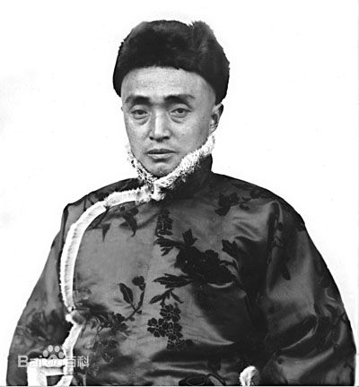
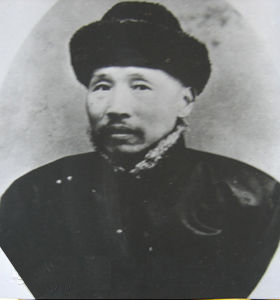
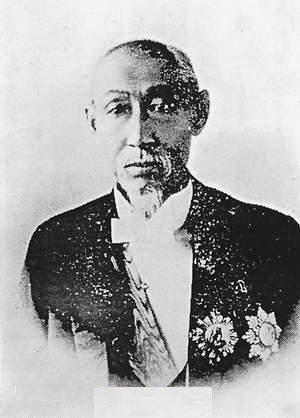

/新建文件夹 (2)504f6abftd4a457a6ea43&690.jpg)
504f6abftd4a4596d75dd&690.jpg)
- 松花江，江水清，夜来雨过春涛生，浪花叠锦绣縠明。
- 松花江，江水清，云霞万里开澄泓。
- 连樯接舰屯江城。
历史发展
历史发展
历史发展
历史发展
历史文化
历史文化
历史文化
历史文化
1945.8
日本战败投降，国民党成立“吉林地方治安维持会”。10月，在中共吉林市委组织下成立吉林市政府。 11月，成立吉林省政府，省会设在吉林市。

1948
日本战败投降，国民党成立“吉林地方治安维持会”。10月，在中共吉林市委组织下成立吉林市政府。 11月，成立吉林省政府，省会设在吉林市。


1946.5
日本战败投降，国民党成立“吉林地方治安维持会”。10月，在中共吉林市委组织下成立吉林市政府。 11月，成立吉林省政府，省会设在吉林市。
1954

- 松花江，江水清，夜来雨过春涛生，浪花叠锦绣縠明。
- 松花江，江水清，云霞万里开澄泓。
- 连樯接舰屯江城。
红叶谷
红叶谷是长白山余脉老爷岭的一条山谷。位于拉法山国家森林公园的庆岭风景区，春夏秋冬四季如画。这里山势俊秀，林木茂盛，春有绿野、夏有飞瀑、秋有红叶、冬有冰雪。出吉林市沿至红叶谷红叶谷蛟河的公路走士路进解放屯，过一个石桥后，既进入吉林红叶谷 红叶谷是长白山余脉老爷岭的一条山谷。位于拉法山国家森林公园的庆岭风景区，春夏秋冬四红叶谷是长白山余脉老爷岭的一条山谷。位于拉法山国家森林公园的庆岭风景区，春夏秋冬四红叶谷是长白山余脉老爷岭的一条山谷。位于拉法山国家森林公园的庆岭风景区，春夏秋冬四……
- 松花江，江水清，夜来雨过春涛生，浪花叠锦绣縠明。
- 松花江，江水清，云霞万里开澄泓。
- 连樯接舰屯江城。
宜人气候
吉林市的气候属于温带大陆性季风气候，四季分明。春季干旱少雨，夏季温热多雨，秋季凉爽多晴，冬季寒冷多雪。受地形影响气温由南向北逐渐降低。年平均气温3.9℃，一月平均气温最低，一般在零下18℃—20℃；七月平均气温最高，一般在21℃—23℃。全年平均降水量650-750毫米，全年日照时数一般在2300～2500小时。特殊的气候环境使吉林市形成了夏季是避暑度假胜地，冬季是冰雪旅游乐园的自然环境。
文化底蕴
吉林市历史悠久，1994年被国务院命名为国家历史文化名城，近年来以被国家旅游局评为中国优秀旅游城市。城市已形成包括艺术表演团体、群众文化、图书、文博、文学艺术、文化产业等全方位、多门类、多层次的新型文化格局，有艺术表演团9个，影剧院15个，艺术学创作机构6个，研究机构1个，艺术馆2所，文化馆（站）134个，新华书店11家，公共图书馆10所，总藏书量达169万册；博物馆3所，省市级文物保护单位47处，文物藏品15231件。
历史沿革
殷周时代，这里已有氏族部落。秦代以前，居住着满族祖先“肃慎人”。后夫余国、勿吉人相互攻伐，中原对此地的称谓也随朝代的更替而有所变化，汉称挹娄，北魏称勿吉，隋唐称粟末靺鞨。五代时期，这里地属辽国，辽代，为辽东京道所辖。后改名为女真.北宋徽宗政和四年，即1115年，女真人建立金国，灭辽后，吉林为金国领地,直到元朝灭掉金国为止。
历史名人
一湾奔流不息的松江碧水拥抱着吉林市这座美丽的城市。在漫长的岁月中，这里曾涌现一批又一批乡邦仁杰，形成了成千上万卷档案资料。或许正是由于他们的存在，历史与尊严，荣誉与精神，如繁星点点，散落民间，潜入心灵，渗透社会，影响着后人对名人、对名人文化的研究与继承
- 松花江，江水清，夜来雨过春涛生，浪花叠锦绣縠明。
- 松花江，江水清，云霞万里开澄泓。
- 连樯接舰屯江城。
-
历史成就
牛子厚一大成就是创办了“喜连成”京剧科班，培养了梅兰芳、周信芳、马连良等一大批京剧大师和表演艺术家，为中国京剧事业的继承和发展作出了巨大贡献。牛家企业经营范围除油盐烟麻等杂货外，还有高级百货，如绫罗绸缎，各种布匹，狐貉貂裘，山珍海味，金银,器皿，首饰打制，中药材，瓷器，鞭炮铺等。牛家的经营范围凡居民生活所需、官绅享乐所用的物品几乎无所不涉。总之，牛家在前中华民国以至近代吉林历史中，商业规模、经营范围、富裕程度都曾是罕有罕见的。
-
历史成就
留传的著作还有《成多禄年谱》、《吉林成氏家谱》，留下来的墨迹，有为于荫霖著《悚斋诗存》写印本1卷、吉林北山《代省长王公维宙德政碑》书丹等。被列为吉林市34位历史文化名人之首。世纪交替之时，北京、吉林等地的成多禄后人，向吉林市档案馆联合捐献和寄存了200余件有关历史文物，该馆专建“成多禄纪念馆”。

-
历史成就
其友王树楠的悼诗中称“公之伟烈彰于国防，履虎之尾，而不敢伤，不兵而武，返我侵土”。张锡銮说他是作硬诗、写硬功夫字、行硬事的三硬先生。宋小濂善于作诗，书法也颇具特色。其诗以古风见长，率皆伤时忧世，有感而发激昂慷慨，直抒胸臆，气势磅礴，感情沉郁。他的书法则以颜真卿为宗，笔法雄健，结体遒劲，在流宕中蕴有雄浑肃穆之意。其著作除上述《报告》、《纪略》外，还有《北徼纪游》、《边声》、《北道集》、《晚学斋诗草》。